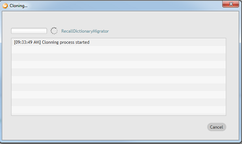
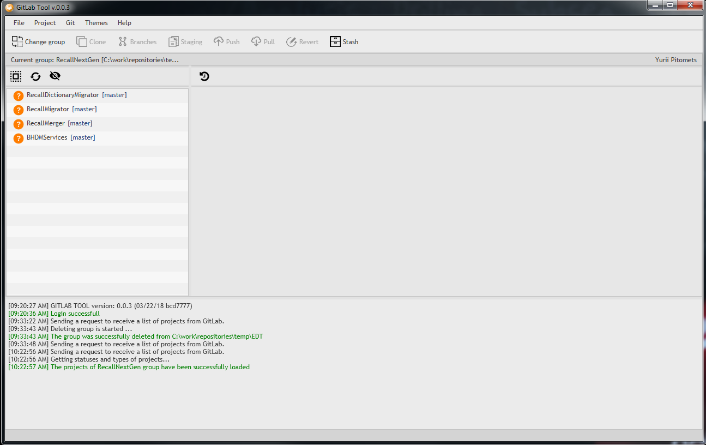
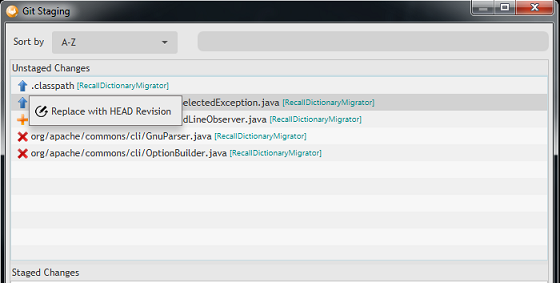

Gitlab tool user guide
v.0.0.3
Powered by Luxoft
Getting Started #back to top
Gitlab Tool is an incredible application that provides different git operations for
multiple projects in a group.
This guide will show you how to use this tool for different tasks
Requirements
Gitlab Tool supports next operation systems:
- Windows 7, 8, 8.1, 10
- GTK Linux (RHEL 6 or higher)
Also, you need the following software to be installed on your computer to use Gitlab Tool
- JRE v1.8.0u45 or higher
- Git client
Start application
There are two ways to launch the application:
- Double click on jar file (if JRE is already installed, application will be launched automatically)
- Open the terminal (or console for Windows OS) and run next lines
$ cd path-to-gitlab-tool-location
$ java -jar GitlabTool-full.jar
Login in #back to top

Input your credentials, choose the Gitlab© server and press Sign in button. After that the
message about login in will be shown. If login in is successful, the Clone group window
will be shown. If login in is failed, the message about it will be shown.
After the first successful login in the username and last chosen server will be saved in the user home dir
C:\Users\user-name\.GitlabTool for Windows, //home/.GitlabTool for *nix
Also, the application logs will be stored there. On the next application launches the last chosen server and username will be shown on the login window.
Choose the server
There are three types of Gitlab servers available by default:
- git.openearth.community
- gitlab.lgc.com
- gitlab.com
User could choose another Gitlab© server. Select ‘Other…’ item from drop-down server menu. The Server selection window will be shown.

Input the server link, choose API version (v4 is available for now) and press the OK button. If server link is incorrect, the message about it will be shown. If everything is OK, new item will be added in drop-down server menu.
Main window #back to top
After successful login in the Main application window will be shown.
At the top of the window we have the main menu, the toolbar and user’s name. On the left
side of the window we have the list of cloned groups (empty by default).
Group list part could be extended.
Groups cloning - #back to top
Press Clone group button on the toolbar (or Git → Clone on the main menu) → the Cloning window will be shown.
Select the group and destination folder and press OK button. If destination folder
wrong, the destination folder field will be highlighted with red color.
After that the clone progress will be shown in separate window.

Clone process could be canceled. In this case only already cloned project of the
group will be available in the project list.
After finishing the clone process the status dialog with information about cloning
will be shown. Press OK button to close Progress dialog. After that, cloned group
will be available in the group list.
Groups import - #back to top
If group already stored on the disk, it could be imported to Gitlab Tool.
Press Import group button on the toolbar and select the folder with existing group on
the disk. After that, select Ok button. Group will be added to the group list.
Groups removing - #back to top
Each group could be deleted from the group list. Select the group and press
Remove group button → Remove group window will be shown.

User could delete group only from Gitlab Tool or both: from Gitlab Tool and the disk (toggle ‘remove group from a local disk’ for it and press ‘Yes’)
Groups loading - #back to top
Select group and press Load group button or just double click on group item to load the list of group’s projects. You can use MB3 item also.
After that, Projects window will be shown.
Projects window #back to top
The Projects window contains a set of features that provides a possibility to make different
operations for multiple projects in a separate group

At the top of the window we have the main menu, the toolbar and the information bar. Information bar contains the name of current group and path for it and, also, the user name.
Projects list - #back to top
On the left side of the window we have projects list with its own toolbar, that consists of three buttons:
- - Select/Deselect all projects
- - Refresh projects
- - Show/Hide shadow projects
Shadow projects aren’t cloned yet and marked with
 sign. They could be cloned later.
Gitlab tool does not support any action with shadow projects except cloning
sign. They could be cloned later.
Gitlab tool does not support any action with shadow projects except cloning
Each item of the project list consists of three parts: a sign of the project type on the left part, current branch in square brackets on the right part and project name between them.
History - #back to top
The Gitlab Tool provides functionality for viewing git history. Press the Show History
button to display the related table. It is updated according to project selection in
the project list. It may be sorted by any column

Console - #back to top
There is a console part at the bottom of the window.
It shows all necessary information about all actions in Gitlab Tool.
First line of the console shows a current version and a number of build.

Below the console you can see the status bar. In shows if any operation is processed at the moment.
Context menu - #back to top
Almost all operations can be reached from the context menu. Just try it yourself
Clone projects - #back to top
Shadow project could be cloned by Gitlab Tool.
Select shadow project (or set of shadow projects) and press Clone button
on the toolbar (or Git → Clone on the main menu or MB3 → Clone on the project item).
After that the clone progress dialog will be shown (Image 5). If clone process
successful, cloned projects will be shown on the project list as normal object.
There is a set of Git options available now for this object.
Branches window - #back to top
This feature allows you to make following operations with branches:
- Create a new branch
- Checkout existing branch
- Remove existing branch
Also, you can select a type of branches that should be displayed: Local,
Remote or both of them.
The “Only common” checkbox adds a filter for a list of branches that shows
branches that contain in all selected projects only
Note: List of projects shows projects that contain selected branch
Staging window - #back to top
The Staging window is used to work with changed files in projects

Using the Staging window you can:
- Delete new files
- Replace with HEAD revision changed files 
- Add files to index and commit them

You can sort unstaged files:
- Alphabetically

- By project
- By extension

- By file status (new, changed, deleted, etc.)

For a quick searching of unstaged files you can use a filter
Push to server - #back to top
Select the project (or a set of projects) and press Push button on the toolbar (or Git → Push on the main menu). After that, all selected projects will be pushed to upstream and status dialog with results of pushing will be shown.
Pull from server - #back to top
Select the project (or a set of projects) and press Pull button on the toolbar (or Git → Pull on the main menu). After that, the Pull progress dialog will be shown and then Status dialog about pull results.

Stash changes - #back to top
Some text
Edit project properties - #back to top
This feature allows you to make changes in pom.xml files. This window contains 3 tabs: “Add repository”, “Edit repository” and “Remove repository”. Also, you can check values of “Release name” and “Eclipse release” properties for selected projects.
During editing you can find two additional checkboxes:
- Commit immediately - makes commit with your changes (if this option is unchecked – changes will apply locally without commit).
- Only common repositories - adds a filter for a list of repositories that shows repositories that contain in all selected projects only
Contacts #back to top
If you have any question, please contact to Yurii Pitomets
(yurii.pitomets2@halliburton.com)

Developers:
- Yevhen Strazhko (Yevhen.Strazhko@halliburton.com)
- Liudmyla Lyska (Liudmyla.Lyska@halliburton.com)
- Pavlo Pidhornyi (Pavlo.Pidhornyi@halliburton.com)
- Ihor Khlaponin (Ihor.Khlaponin@halliburton.com)
- Oleksandr Kozlov (Oleksandr.Kozlov@halliburton.com)